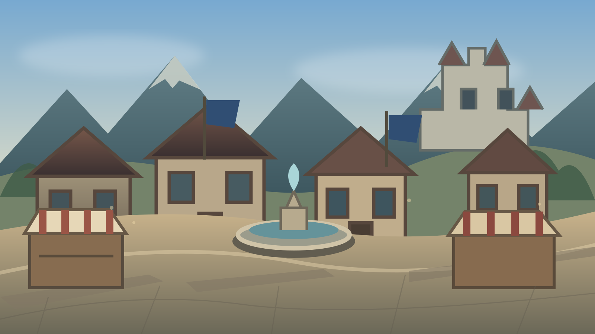

A
AI-TRPG
THE LIVING WORLD
1876년 · 인간 제국 남부
바텀웨이마을
로컬 기록 준비
⛶
☰
PROLOGUE · 01
남부 초급 모험가 구역
지역 정보 ⓘ

HUMAN EMPIRE · SOUTHERN FRONTIER
바텀웨이마을
모험가의 첫걸음이 시작되는 곳
광장에는 상인들의 목소리와 분수 소리가 잔잔하게 퍼진다.
분수대
의뢰 게시판
모험가 길드
ACTION
↗
이동
◌
대화
⚔
공격 연습
⌂
시설
⌖
지도
×
\n